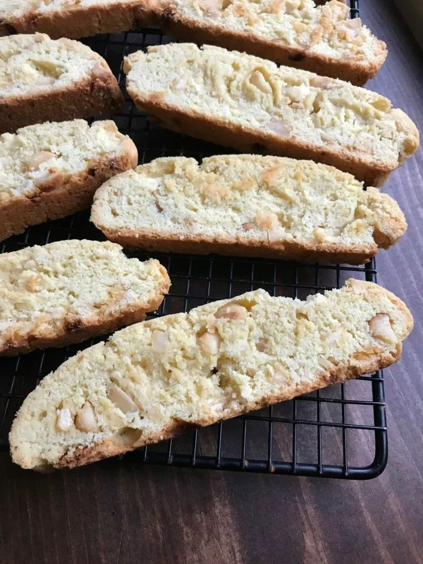

White Chocolate Biscotti

Delight in the crunchy perfection of our White Chocolate Biscotti! These twice-baked Italian cookies are infused with rich vanilla and studded with creamy white chocolate chunks, creating a heavenly combination of flavors. Their crisp texture makes them ideal for dipping in coffee or tea, while the sweet notes of white chocolate add a luscious touch. Perfect for sharing or enjoying on your own, these biscotti are a sophisticated treat for any occasion!
Ingredients
-
1 1/2cups sugar
-
1/2 cup butter, plus more for greasing
-
2 eggs
-
2 3/4 cups all-purpose flour, plus more for dusting
-
3/4 cup chopped toasted almonds
-
3/4 cup chopped dried apricots
-
1/4 cup orange juice
-
3 (1 ounce) square white chocolate, melted and cooled
-
3 (1 ounce) squares white chocolate, chopped
- 2 1/2 teaspoons baking powder
-
1 teaspoon salt
-
1 teaspoon almond extract
Steps
-
Preheat the oven to 350 degrees F (175 degrees C). Grease and flour 2 cookie sheets.
-
Combine sugar, butter, and eggs in a large bowl; beat with an electric mixer until smooth and creamy. Add flour, almonds, apricots, orange juice, melted white chocolate, chopped white chocolate, baking powder, salt, and almond extract. Mix until well blended; dough will be sticky and very soft.
-
Divide dough in 1/2 and carefully form into 2 long logs, each about 2-inches wide. Place each log on a prepared cookie sheet.
-
Bake in the preheated oven until golden brown, 25 to 30 minutes, keeping a close eye that they don't get too brown. Cool on the cookie sheets for 10 minutes. Cut logs into 1/2-inch wide strips.
-
Place cookies back on cookie sheets. Return to the oven and bake for 10 more minutes. Cool completely before serving.